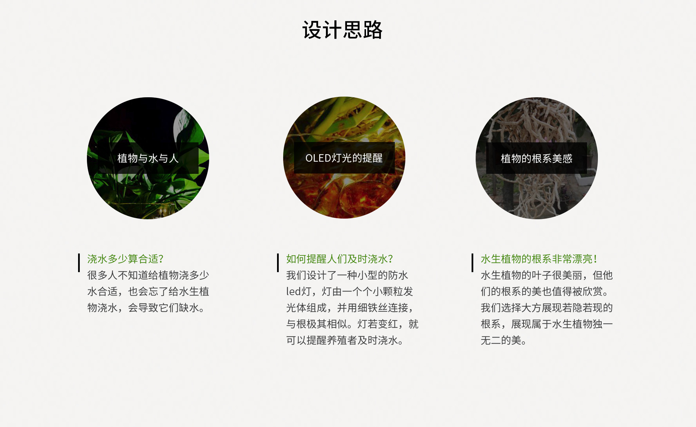
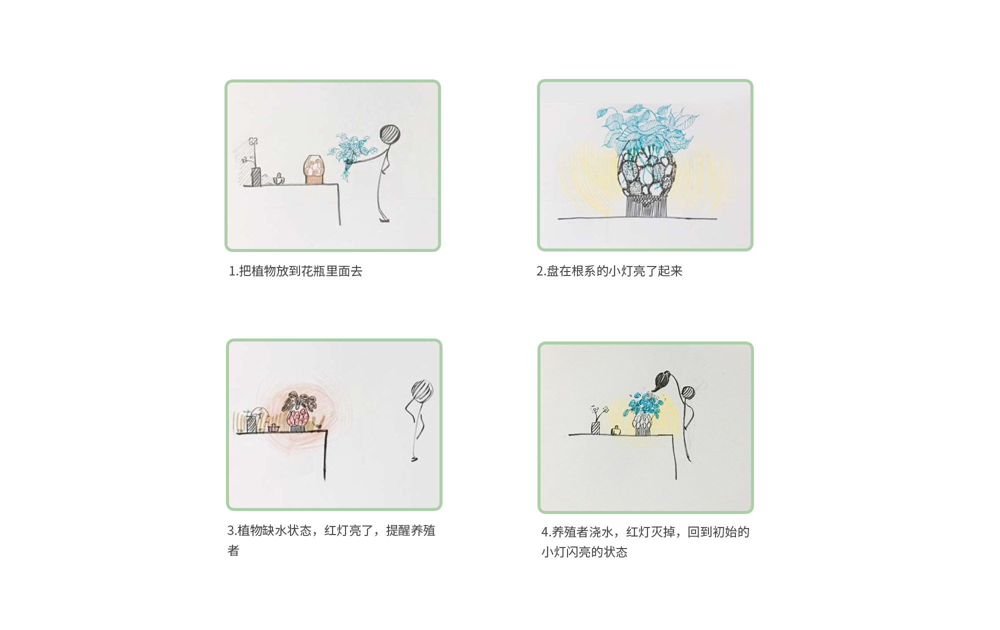
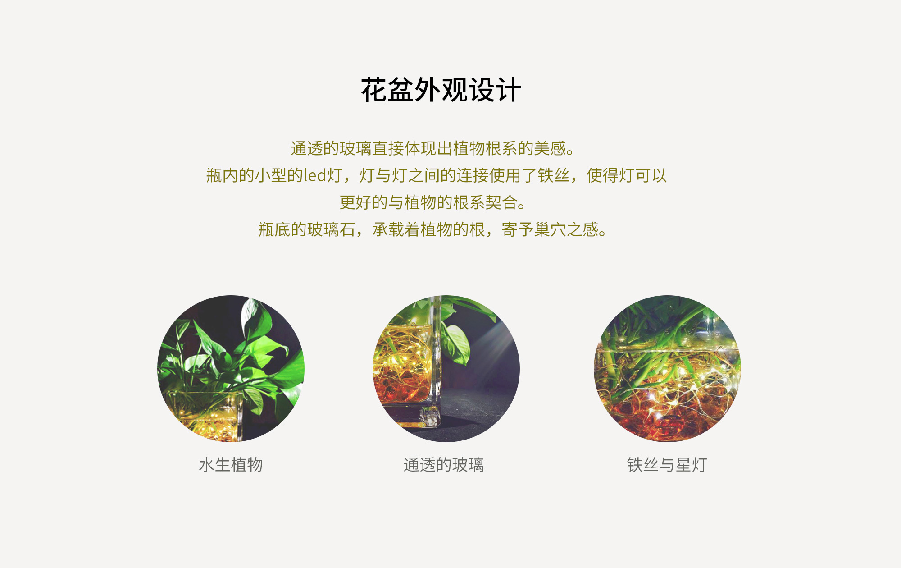
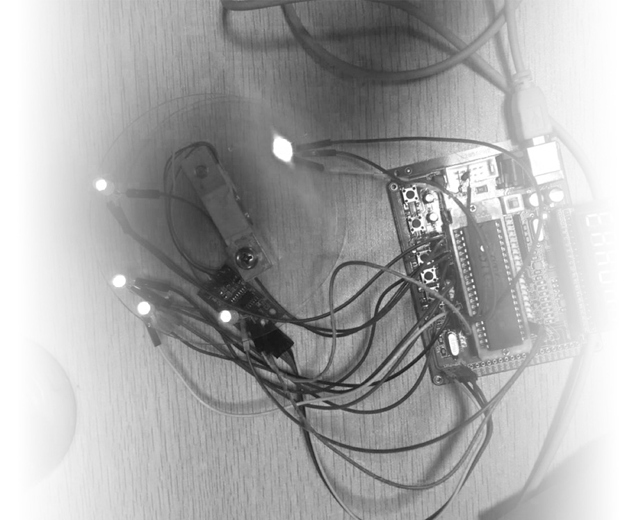
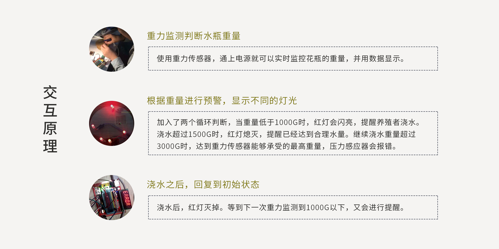

一种省心的水生植物养殖方式
你有没有这样的经历？冲动下购买了花草之后，却忘记给它们浇水施肥而导致花草的枯萎？
我就遇到了这样一个问题，浙大的实验室购买了一批水生植物点缀环境，但是由于养殖者的懈怠，植物长期缺水，濒临枯萎。注意到了这个问题后，我希望寻找一种方式，能及时提醒养殖者浇水，保护植物。



交互方式
交互实现，我们使用单片机以及keil4作为主要的编程工具。


最终效果图
水下本是水上的倒影，愈是枝繁叶茂，愈是盘根错节。
逆视乾坤，只见千丝万缕。
纤毫毕现，顺遂水波，洒脱恣意。
落叶归根意为归家，根系交错，暖光环绕，关怀植物的同时，给自己一个寄托。
希望自己的设计可以帮助人们更好的生活，更好的照顾水生植物。